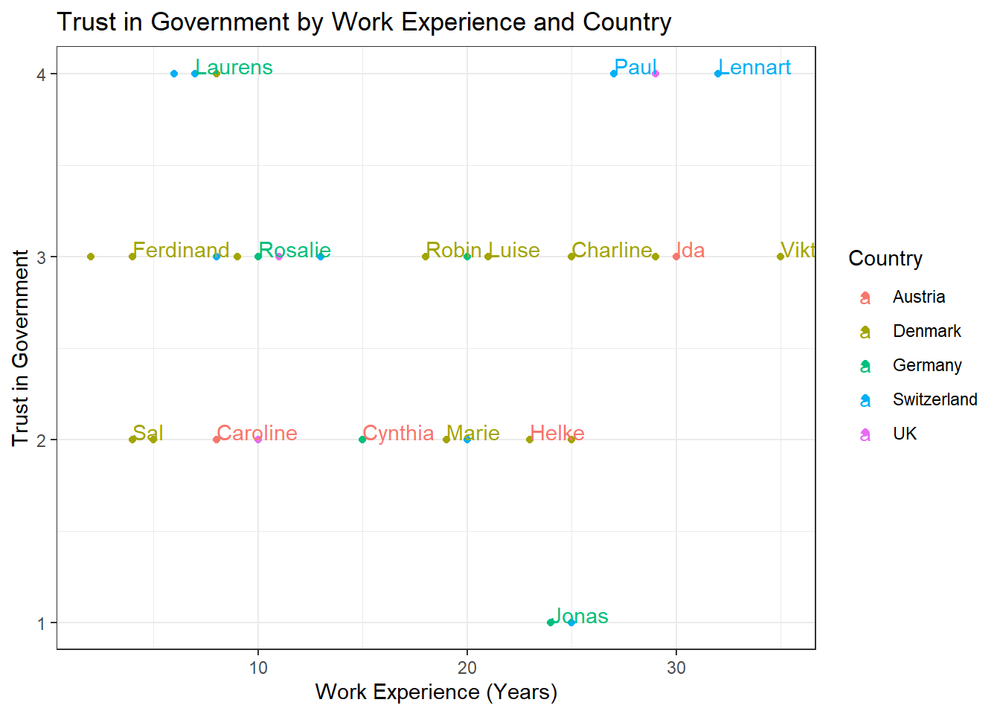

Solutions
This is where you’ll find solutions for all of the tutorials.
Solutions for Exercise 1
Task 1
Below you will see multiple choice questions. Please try to identify the correct answers. 1, 2, 3 and 4 correct answers are possible for each question.
1. What panels are part of RStudio?
Solution:
- source (x)
- console (x)
- packages, files & plots (x)
2. How do you activate R packages after you have installed them?
Solution:
- library() (x)
3. How do you create a vector in R with elements 1, 2, 3?
Solution:
- c(1,2,3) (x)
4. Imagine you have a vector called ‘vector’ with 10 numeric elements. How do you retrieve the 8th element?
Solution:
- vector[8] (x)
5. Imagine you have a vector called ‘hair’ with 5 elements: brown, black, red, blond, other. How do you retrieve the color ‘blond’?
Solution:
- hair[4] (x)
Task 2
Create a numeric vector with 8 values and assign the name age to the vector. First, display all elements of the vector. Then print only the 5th element. After that, display all elements except the 5th. Finally, display the elements at the positions 6 to 8.
Solution:
## [1] 65 52 73 71 80 62 68 87## [1] 80## [1] 65 52 73 71 62 68 87## [1] 62 68 87Task 3
Create a non-numeric, i.e. character, vector with 4 elements and assign the name eye_color to the vector. First, print all elements of this vector to the console. Then have only the value in the 2nd element displayed, then all values except the 2nd element. At the end, display the elements at the positions 2 to 4.
Solution:
## [1] "blue" "green" "brown" "grey"## [1] "green"## [1] "blue" "brown" "grey"## [1] "green" "brown" "grey"## [1] "green"## [1] "blue" "brown" "grey"## [1] "green" "brown" "grey"Solutions for Exercise 2
Task 1
Download the “WoJ_names.csv” from LRZ Sync & Share (click here) and put it into the folder that you want to use as working directory.
Set your working directory and load the data into R by saving it into a source object called data. Note: This time, it’s a csv that is separated by semicolons, not by commas.
Solution:
Task 2
Now, print only the column to the console that shows the trust in
government. Use the $ operator first. Then try to achieve the same
result using the subsetting operators, i.e. [].
Solution:
## [1] 3 4 4 4 2 4 1 3 1 3 2 3 2 2 2 2 3 3 4 3 3 2 3 4 3 3 3 2 3 3 3 3 4 2 3 2 2 2
## [39] 2 3## [1] 3 4 4 4 2 4 1 3 1 3 2 3 2 2 2 2 3 3 4 3 3 2 3 4 3 3 3 2 3 3 3 3 4 2 3 2 2 2
## [39] 2 3Solutions for Exercise 3
Task 1
Below you will see multiple choice questions. Please try to identify the correct answers. 1, 2, 3 and 4 correct answers are possible for each question.
1. What are the main characteristics of tidy data?
Solution:
- Every observation is a row. (x)
2. What are dplyr functions?
Solution:
mutate()(x)
3. How can you sort the eye_color of Star Wars characters from Z to A?
Solution:
starwars_data %>% arrange(desc(eye_color))(x)starwars_data %>% select(eye_color) %>% arrange(desc(eye_color))
4. Imagine you want to recode the height of the these characters. You want to have three categories from small and medium to tall. What is a valid approach?
Solution:
starwars_data %>% mutate(height = case_when(height<=150~"small",height<=190~"medium",height>190~"tall"))
5. Imagine you want to provide a systematic overview over all hair colors and what species wear these hair colors frequently (not accounting for the skewed sampling of species)? What is a valid approach?
Solution:
starwars_data %>% group_by(hair_color, species) %>% summarize(count = n()) %>% arrange(hair_color)
Task 2
Now it’s you turn. Load the starwars data like this:
library(dplyr) # to activate the dplyr package
starwars_data <- starwars # to assign the pre-installed starwars data set (dplyr) into a source object in our environmentHow many humans are contained in the starwars data overall? (Hint: use
summarize(count = n()) or count())?
Solution:
You can use summarize(count = n()):
## # A tibble: 1 × 1
## count
## <int>
## 1 35Alternatively, you can use the count() function:
## # A tibble: 1 × 2
## species n
## <chr> <int>
## 1 Human 35Task 3
How many humans are contained in starwars by gender?
Solution:
You can use summarize(count = n()):
starwars_data %>%
filter(species == "Human") %>%
group_by(species, gender) %>%
summarize(count = n())## # A tibble: 2 × 3
## # Groups: species [1]
## species gender count
## <chr> <chr> <int>
## 1 Human feminine 9
## 2 Human masculine 26Alternatively, you can use the count() function:
## # A tibble: 2 × 3
## species gender n
## <chr> <chr> <int>
## 1 Human feminine 9
## 2 Human masculine 26Task 4
What is the most common eye_color among Star Wars characters? (Hint: use
arrange())__
Solution:
## # A tibble: 15 × 2
## eye_color count
## <chr> <int>
## 1 brown 21
## 2 blue 19
## 3 yellow 11
## 4 black 10
## 5 orange 8
## 6 red 5
## 7 hazel 3
## 8 unknown 3
## 9 blue-gray 1
## 10 dark 1
## 11 gold 1
## 12 green, yellow 1
## 13 pink 1
## 14 red, blue 1
## 15 white 1Alternatively, you can use the count() function:
## # A tibble: 15 × 2
## eye_color n
## <chr> <int>
## 1 brown 21
## 2 blue 19
## 3 yellow 11
## 4 black 10
## 5 orange 8
## 6 red 5
## 7 hazel 3
## 8 unknown 3
## 9 blue-gray 1
## 10 dark 1
## 11 gold 1
## 12 green, yellow 1
## 13 pink 1
## 14 red, blue 1
## 15 white 1Task 5
What is the average mass of Star Wars characters that are not human and
have yellow eyes? (Hint: remove all NAs)__
Solution:
starwars_data %>%
filter(species != "Human" & eye_color=="yellow") %>%
summarize(mean_mass = mean(mass, na.rm=TRUE))## # A tibble: 1 × 1
## mean_mass
## <dbl>
## 1 74.1Task 6
Compare the mean, median, and standard deviation of mass for all humans
and droids. (Hint: remove all NAs)__
Solution:
starwars_data %>%
filter(species=="Human" | species=="Droid") %>%
group_by(species) %>%
summarize(M = mean(mass, na.rm = TRUE),
Med = median(mass, na.rm = TRUE),
SD = sd(mass, na.rm = TRUE)
)## # A tibble: 2 × 4
## species M Med SD
## <chr> <dbl> <dbl> <dbl>
## 1 Droid 69.8 53.5 51.0
## 2 Human 82.8 79 19.4Task 7
Create a new variable in which you store the mass in gram. Add it to the data frame.
Solution:
starwars_data <- starwars_data %>%
mutate(gr_mass = mass*1000)
starwars_data %>%
select(name, species, mass, gr_mass)## # A tibble: 87 × 4
## name species mass gr_mass
## <chr> <chr> <dbl> <dbl>
## 1 Luke Skywalker Human 77 77000
## 2 C-3PO Droid 75 75000
## 3 R2-D2 Droid 32 32000
## 4 Darth Vader Human 136 136000
## 5 Leia Organa Human 49 49000
## 6 Owen Lars Human 120 120000
## 7 Beru Whitesun lars Human 75 75000
## 8 R5-D4 Droid 32 32000
## 9 Biggs Darklighter Human 84 84000
## 10 Obi-Wan Kenobi Human 77 77000
## # ℹ 77 more rowsSolutions for Exercise 4
Task 3
Solution:
data %>%
ggplot(aes(x=work_experience, y=trust_government, color=country)) +
geom_point() +
geom_text(aes(label=name), check_overlap = TRUE, hjust = 0, vjust = 0) +
theme_bw() +
labs(x = "Work Experience (Years)", y = "Trust in Government", color = "Country", title = "Trust in Government by Work Experience and Country")
Task 4
Solution:
data %>%
ggplot(aes(x=country, fill=employment)) +
geom_bar(position="dodge") +
theme_bw() +
labs(x = "Country", y = "Count", fill = "Employment Type", title = "Employment Types by Country")Alternative Solution: Those who prefer the width of the bars to be aligned can use this code:
Task 5
You can solve this exercise using two approaches. The first approach is to create a new variable called experience_level and save it in your original data set to be used for data visualization in the next, separate step:
Solution:
data <- data %>%
mutate(experience_level = case_when(
work_experience <= 10 ~ "Junior",
work_experience > 10 & work_experience <= 20 ~ "Mid-Level",
work_experience > 20 ~ "Senior"))
data %>%
ggplot(aes(x=country, fill=employment)) +
geom_bar(position="dodge") +
theme_bw() +
labs(x = "Country", y = "Count", fill = "Employment Type", title = "Employment Types by Country and Level of Experience") +
facet_wrap(~experience_level) +
theme(axis.text.x = element_text(angle = 45, hjust = 1))The more elegant solution is to perform your data management in one go without saving the variable experience_level back into your original data set. Using this approach will help declutter your data because you won’t need to create and save a new variable that is only required for a single visualization:
Preferred Solution:
data %>%
mutate(experience_level = case_when(
work_experience <= 10 ~ "Junior",
work_experience > 10 & work_experience <= 20 ~ "Mid-Level",
work_experience > 20 ~ "Senior")) %>%
ggplot(aes(x=country, fill=employment)) +
geom_bar(position="dodge") +
theme_bw() +
labs(x = "Country", y = "Count", fill = "Employment Type", title = "Employment Types by Country and Level of Experience") +
facet_wrap(~experience_level) +
theme(axis.text.x = element_text(angle = 45, hjust = 1))Solutions for Exercise 5
In this exercise, we will work with the
mtcars data that comes pre-installed with dplyr.
library(tidyverse)
data <- mtcars
# To make the data somewhat more interesting, let's set a few values to missing values:
data$wt <- na_if(data$wt, 4.070)
data$mpg <- na_if(data$mpg, 22.8)Task 1
Check the data set for missing values (NAs) and delete all observations that have missing values.
Solution:
You can solve this by excluding NAs in every single column:
data <- data %>%
# we'll now only keep observations that are NOT NAs in the following variables (remember that & = AND):
filter(!is.na(mpg) & !is.na(cyl) & !is.na(disp) & !is.na(hp) & !is.na(drat) & !is.na(wt) & !is.na(qsec)
& !is.na(vs) & !is.na(am) & !is.na(gear) & !is.na(carb))Alternatively, excluding NAs from the entire data set works, too, but
you have not learned the na_omit()function in the tutorials:
Task 2
Let’s transform the weight wt of the cars. Currently, it’s given as Weight in 1000 lbs. I guess you are not used to lbs, so try to mutate wt to represent Weight in 1000 kg. 1000 lbs = 453.59 kg, so we will need to divide by 2.20.
Similarly, I think that you are not very familiar with the unit Miles per gallon of the mpg variable. Let’s transform it into Kilometer per liter. 1 m/g = 0.425144 km/l, so again divide by 2.20.
Solution:
Task 3
Now we want to group the weight of the cars in three categories: light, medium, heavy. But how to define light, medium, and heavy cars, i.e., at what kg should you put the threshold? A reasonable approach is to use quantiles (see Tutorial: summarize() [+ group_by()]). Quantiles divide data. For example, the 75% quantile states that exactly 75% of the data values are equal or below the quantile value. The rest of the values are equal or above it.
Use the lower quantile (0.25) and the upper quantile (0.75) to estimate two values that divide the weight of the cars in three groups. What are these values?
Solution:
## UQ_wt LQ_wt
## 1 1.622727 1.19090975% of all cars weigh 1.622727* 1000kg or less and 25% of all cars weigh 1.190909* 1000kg or less.
Task 4
Use the values from Task 3 to create a new variable wt_cat that divides the cars in three groups: light, medium, and heavy cars.
Solution:
Task 5
How many light, medium, and heavy cars are part of the data?
Solution:
You can solve this with the summarize(count = n() function:
## # A tibble: 3 × 2
## wt_cat count
## <chr> <int>
## 1 heavy car 9
## 2 light car 7
## 3 medium car 139 heavy cars, 13 medium cars, and 7 light cars.
Alternatively, you can also use the count() function:
## wt_cat n
## 1 heavy car 9
## 2 light car 7
## 3 medium car 13Task 6
Now sort this count of the car weight classes from highest to lowest.
Solution:
## # A tibble: 3 × 2
## wt_cat count
## <chr> <int>
## 1 medium car 13
## 2 heavy car 9
## 3 light car 7Task 7
Make a scatter plot to indicate how many km per liter (mpg) a car can drive depending on its weight (wt). Facet the plot by weight class (wt_cat). Try to hide the plot legend (you have learned that in another exercise).
data %>%
mutate(wt_cat = factor(wt_cat, levels = c("light car", "medium car", "heavy car"))) %>%
ggplot(aes(x=wt, y=mpg, color=wt_cat)) +
geom_point() +
theme_bw() +
scale_color_manual(values = c("#7b3294", "#84798a", "#008837")) + # optional command, choose your own beautiful colors for the graph
theme(legend.position = "none") +
labs(title = "Relationship between car weight and achieved kilometers per liter", x="Weight in 1000kg", y="km/l") +
facet_wrap(~wt_cat)Task 8
Recreate the diagram from Task 7, but exclude all cars that weigh between 1.4613636 and 1.5636364 *1000kg from it.
Solution:
data %>%
filter(wt < 1.4613636 | wt > 1.5636364) %>%
mutate(wt_cat = factor(wt_cat, levels = c("light car", "medium car", "heavy car"))) %>%
ggplot(aes(x=wt, y=mpg, color=wt_cat)) +
geom_point() +
theme_bw() +
scale_color_manual(values = c("#7b3294", "#84798a", "#008837")) + # optional command, choose your own beautiful colors for the graph
theme(legend.position = "none") +
labs(title = "Relationship between car weight and achieved kilometers per liter", x="Weight in 1000kg", y="km/l") +
facet_wrap(~wt_cat)Why would we use data %>% filter(wt < 1.4613636 | wt > 1.5636364)
instead of data %>% filter(wt > 1.4613636 | wt < 1.5636364)?
Let’s look at the resulting data sets when you apply those filters to compare them:
## wt
## Mazda RX4 1.1909091
## Mazda RX4 Wag 1.3068182
## Valiant 1.5727273
## Duster 360 1.6227273
## Merc 240D 1.4500000
## Merc 450SL 1.6954545
## Merc 450SLC 1.7181818
## Cadillac Fleetwood 2.3863636
## Lincoln Continental 2.4654545
## Chrysler Imperial 2.4295455
## Fiat 128 1.0000000
## Honda Civic 0.7340909
## Toyota Corolla 0.8340909
## Toyota Corona 1.1204545
## Dodge Challenger 1.6000000
## Camaro Z28 1.7454545
## Pontiac Firebird 1.7477273
## Fiat X1-9 0.8795455
## Porsche 914-2 0.9727273
## Lotus Europa 0.6877273
## Ford Pantera L 1.4409091
## Ferrari Dino 1.2590909
## Maserati Bora 1.6227273
## Volvo 142E 1.2636364The resulting table does not include any cars that weigh between
1.4613636 and 1.5636364. But if you use
data %>% filter(wt > 1.4613636 | wt < 1.5636364)…
## wt
## Mazda RX4 1.1909091
## Mazda RX4 Wag 1.3068182
## Hornet 4 Drive 1.4613636
## Hornet Sportabout 1.5636364
## Valiant 1.5727273
## Duster 360 1.6227273
## Merc 240D 1.4500000
## Merc 280 1.5636364
## Merc 280C 1.5636364
## Merc 450SL 1.6954545
## Merc 450SLC 1.7181818
## Cadillac Fleetwood 2.3863636
## Lincoln Continental 2.4654545
## Chrysler Imperial 2.4295455
## Fiat 128 1.0000000
## Honda Civic 0.7340909
## Toyota Corolla 0.8340909
## Toyota Corona 1.1204545
## Dodge Challenger 1.6000000
## AMC Javelin 1.5613636
## Camaro Z28 1.7454545
## Pontiac Firebird 1.7477273
## Fiat X1-9 0.8795455
## Porsche 914-2 0.9727273
## Lotus Europa 0.6877273
## Ford Pantera L 1.4409091
## Ferrari Dino 1.2590909
## Maserati Bora 1.6227273
## Volvo 142E 1.2636364… cars that weigh between 1.4613636 and 1.5636364 are still included!
But why? The filter()function always keeps cases based on the
criteria that you provide.
In plain English, my solution code says the following: Take my dataset “data” and keep only those cases where the weight variable wt is less than 1.4613636 OR larger than 1.5636364. Put differently, the solution code says: Delete all cases that are greater than 1.4613636 but are also less than 1.5636364.
The wrong code, on the other hand, says: Take my dataset “data” and keep only those cases where the weight variable wt is greater than 1.4613636 OR smaller than 1.5636364. This is ALL the data because all your cases will be greater than 1.4613636 OR smaller than 1.5636364. You are not excluding any cars.